本文章將介紹安裝 google command SDK
1. 首先到官網在互動是安裝程式下，點擊 Cloud SDK 安裝程式下載 GoogleCloudSDKinstaller.exe 官方下載連結
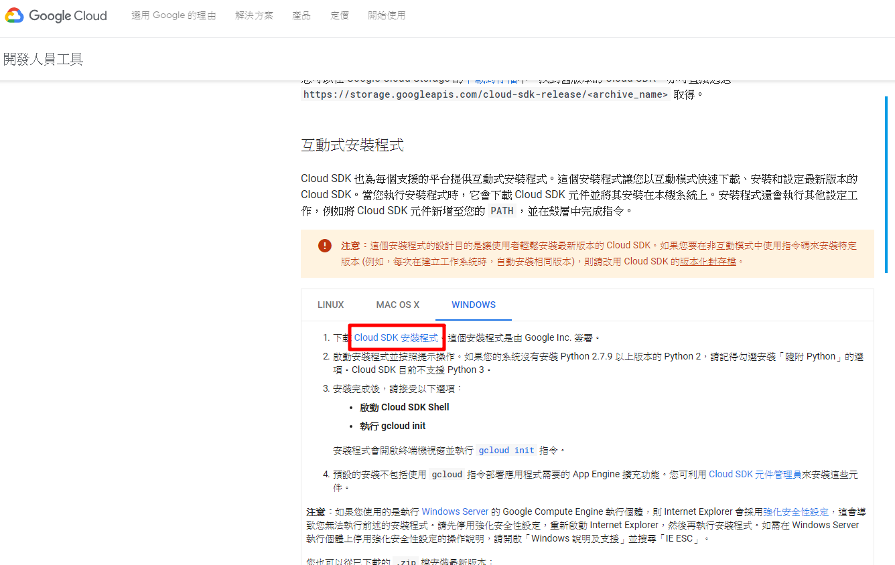
2. 點擊 GoogleCloudSDKinstaller.exe 開始安裝
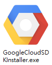
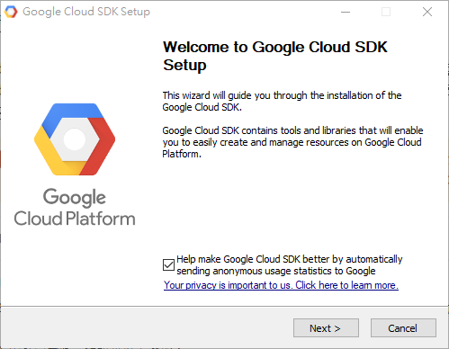
3. 同意條款
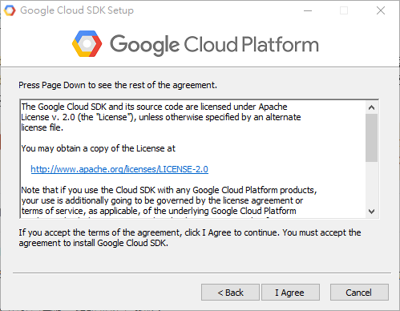
4. 安裝類型單個用戶或所有用戶，依自己需求選擇
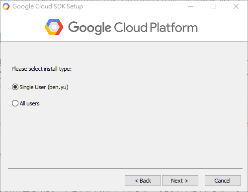
5. 選擇安裝地方
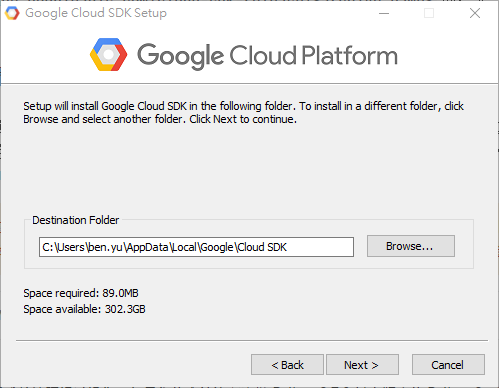
6. 選擇要安裝組件，依自己需求選擇
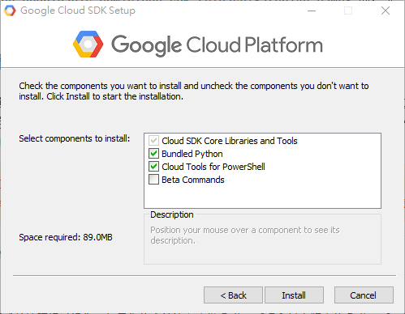
7. 安裝畫面，安裝好點擊 Next 繼續下一步
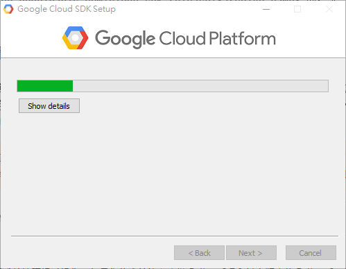
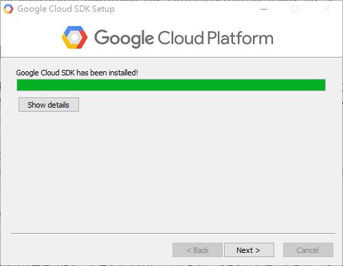
8. 點擊 Finish 是否啟動 SDK、是否建立桌面捷徑等項目，依自己需求選擇
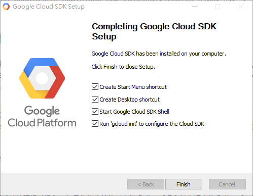
9. 安裝好後開啟 google SDK 會出現2個選項，選擇 1 使用新設置重新初始化此配置
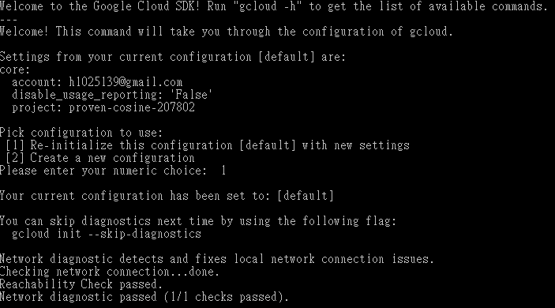
10. 接下來會有 google 帳號選擇
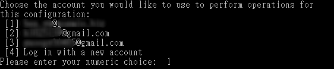
11. GCP 專案ID選擇，不知道請到 GCP 查看
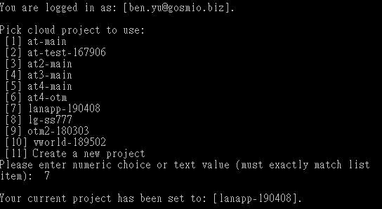
12. 選擇區域
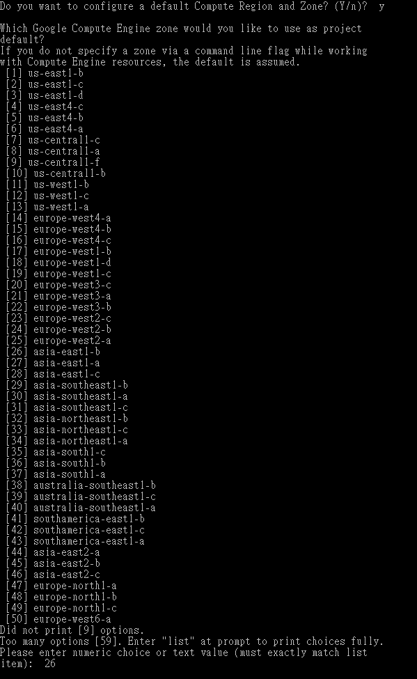
13. 出現下圖畫面就是設定結束，整個 google SDK 安裝就完成了
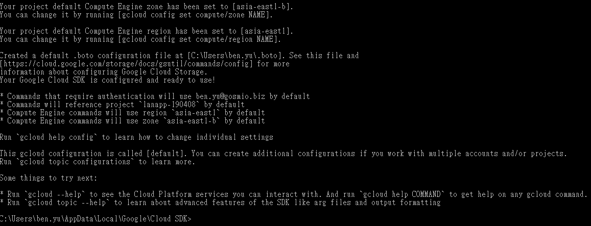